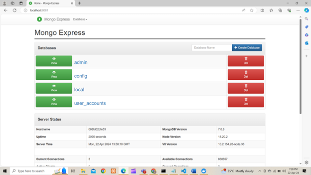

Cloud IA 2
Create any three-tier application using Docker, using a multi-container setup. Build at least one docker image
using Dockerfile. You are free to use your old projects, build new projects or take any project from GitHub.
However, if you are using a project from Github, properly cite the original author of the code in your blog.
-
Write a blog post in a tutorial-like manner, documenting every little step of your work. This blog should
include screenshots and explanations. You can include some diagrams, too, if necessary. You are free to
make the tutorial in parts. But in such case, part 1 should have a link to part 2 and so on.
-
The blog post should be posted on your own GitHub pages blog. (Search for "How to set up a blog using
GitHub pages and Jekyll". )
-
The Dockerfile(s) should be uploaded to a Github repository, with a Readme file explaining each line of
the Dockerfile.
-
As usual, append your roll number to the image/container name. Also, make sure to display your roll
number in your presentation tier (front end).
-
You can use any DBMS you like, but I encourage you to use a Database management software which you have
not used before.
Step by Step Procedure
Step 1: Clone the Project
To begin, clone the project from the repository hosted by Nana
Janashia.
You can access the project via the following Git URL:
https://gitlab.com/nanuchi/developing-with-docker.git
Once cloned, navigate to the directory where the
project has been downloaded. Open a terminal window and change the directory to the one where the project was
cloned.

Step 2: Create a Docker Network
Create a Docker network to ensure container isolation.
This will help in managing communication between containers.

Step 3: Run the Database Container
Run the MongoDB container with the following command:
- Creates a detached MongoDB container. - Connects it to a specified Docker network. - Maps host port 27017
to container port 27017 for MongoDB client connections. - Sets the MongoDB root username to "admin" and password
to "password". - Uses the official MongoDB Docker image.
Step 4: Run the mongo-express Server
Run the mongo-express server container using the
following command:
Access the mongo-express interface by navigating to
http://localhost:8081 in a web browser.
You will be prompted to enter the username and password. Use the
provided credentials: username - admin, password - pass.
Once logged in, you will be able to see the
mongo-express dashboard.

Step 5: Create Docker Image for the Application
Navigate to the 'app' folder of the project
and create a Dockerfile. Add the below instructions to the Dockerfile for building the Docker image for the
application.
- FROM node: This line specifies the base image to use for building the Docker image. In this
case, it uses the official Node.js image from Docker Hub.
- WORKDIR /app: This sets the
working directory inside the container to /app. It means that any subsequent commands will be executed from
this directory.
- COPY . . : This copies the contents of the current directory (where
the Dockerfile is located) into the /app directory within the container. The first . refers to the source
directory (the current directory), and the second . refers to the destination directory (the /app directory
inside the container).
- ENV MONGO_DB_USERNAME=admin : This sets an environment variable
named MONGO_DB_USERNAME with the value admin inside the container. This variable will be accessible to the
application running in the container. - ENV MONGO_DB_PWD=password : Similar to the previous
line, this sets an environment variable named MONGO_DB_PWD with the value password inside the container. -
RUN npm install : This command install the Node.js dependencies for the application. It
executes the npm install command inside the container's /app directory. - EXPOSE 3000: This
instruction informs Docker that the container listens on port 3000 at runtime. However, it does not actually
publish the port. It's a way to document which ports the container is designed to use. - CMD [ "node",
"server.js" ] : This specifies the command to run when the container starts. It runs the Node.js
application by executing node server.js. This assumes that server.js is the entry point file for the Node.js
application.
Step 6: Update server.js and Build Docker Image
Make the necessary changes to the
'server.js' file to replace occurrences of 'localhost' with the name of the MongoDB container.
Once the
changes are made, build the Docker image using the provided Dockerfile and run the container with the following
command:
Upon successful execution, you can access the website at http://localhost:3000 and interact with it.